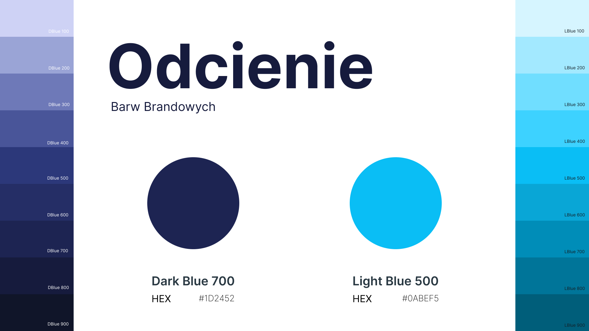
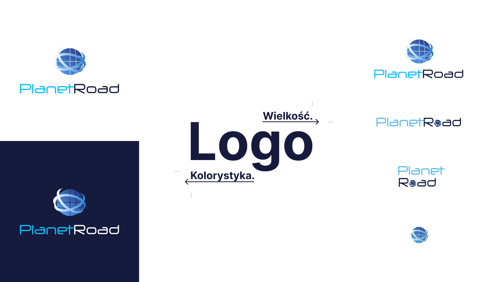
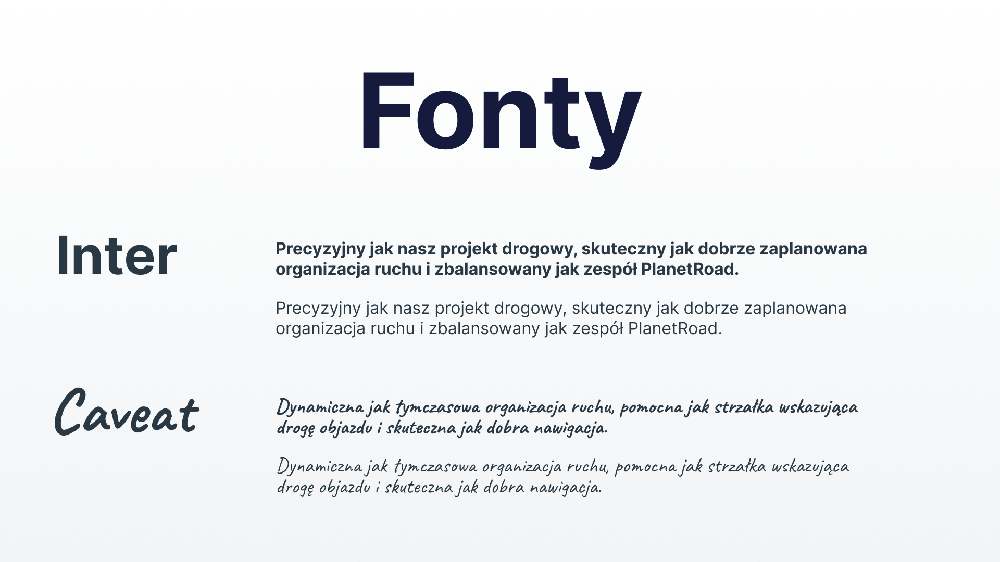
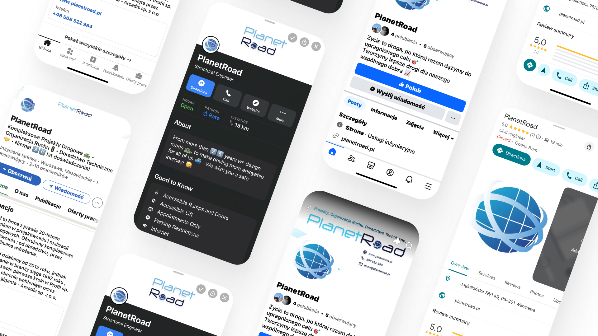

Identyfikacja Wizualna
PlanetRoad jest firmą projektującą drogi w Polsce od niespełna 30 lat. W internecie firma posiadała jedynie prostą stronę internetową i nie dawała klientowi większej szansy się poznać ani zapaść w pamięć z pozytywnej strony. Współpracę z firmą zacząłem od stworzenia identyfikacji wizualnej, która pomoże firmie wejść w świat cyfrowy i zaistnieć w internecie.

Cel
🎯 Stworzenie spójnej identyfikacji wizualnej wspierającej profesjonalny i wiarygodny wizerunek firmy w środowisku cyfrowym.
🎯 Ujednolicenie sposobu komunikacji wizualnej w różnych kanałach (druk, web, social media).
🎯 Przygotowanie marki do dalszej ekspansji cyfrowej (np. przyszłe kampanie, portfolio online, przetargi publiczne).
Ograniczenia
⚠️ Firma działa w sektorze B2B , co wymaga utrzymania wizerunku profesjonalnego, stonowanego i wiarygodnego.
⚠️ Nowa identyfikacja wizualna musi pozostać spójna z istniejącym logo , które firma zdecydowała się zachować podczas tworzenia nowej strony internetowej i wdrażania komunikacji w mediach społecznościowych.
⚠️ Brak wcześniejszego doświadczenia firmy w komunikacji wizualnej i marketingu cyfrowym
⚠️ Konieczność utrzymania ciągłości w działaniach firmy w trakcie wdrożenia
Proces Projektowy
01 Badania i Analiza
Projekt identyfikacji wizualnej dla PlanetRoad rozpocząłem od serii analiz i rozmów z przedstawicielami firmy, w tym wywiadu z CEO. Celem było zrozumienie, jak marka funkcjonuje na rynku i znalezienie możliwości w jaki sposób może wyróżnić się spośród konkurencji w swojej branży.
Wywiad z CEO powiedział mi między innymi, że PlanetRoad skupia się głównie na współpracy B2B - z większymi firmami (np. Developerami) oraz jednostkami samorządowymi. Dlatego priorytetem projektowym stało się stworzenie wizerunku opartego na profesjonalizmie, zaufaniu i wiarygodności, przy jednoczesnym zachowaniu nowoczesnego charakteru.
Następnie przeprowadziłem analizę konkurencji w branży drogowej, która ujawniła dużą powtarzalność wizualną - wiele firm korzystało z podobnych układów stron i schematycznych kompozycji. Postanowiłem więc zaprojektować system identyfikacji, który wyróżni PlanetRoad, zachowując jednocześnie czytelność, funkcjonalność i wysoką jakość wizualną oddającą również tożsamość marki.
Analiza psychologicznego znaczenia kolorów
wykorzystywanych w logo potwierdziła trafność ich
wyboru:
• Błękit - budzi zaufanie i spokój, kojarzy się z
nowoczesnością i innowacyjnością.
• Granat - symbolizuje profesjonalizm i
odpowiedzialność.
W połączeniu tworzą one wiarygodny i spójny zestaw barw,
wspierający komunikację marki.
Przygotowując się do stworzenia alternatywnych wersji Logo zagłębiłem się w praktyki globalnych marek (m.in. Coca-Cola, Disney, Chanel) i przeanalizowałem ich podejście do tworzenia systemów identyfikacji o wysokiej elastyczności. Wnioski z tej analizy stały się podstawą do zaprojektowania zestawu wariantów logo o różnym stopniu szczegółowości, zachowujących spójność i rozpoznawalność w różnych kontekstach.
Kolejno zbadałem oczekiwania użytkowników i najczęściej wyszukiwane informacje o firmach z branży, aby zapewnić użyteczność nowej strony internetowej pod kątem UX i SEO. Analiza treści pokazała, że kluczowe są: przejrzysta oferta, szybki kontakt oraz portfolio projektów.
Na koniec przeanalizowałem także komunikację branży w mediach społecznościowych, by opracować wizualny styl dopasowany do specyfiki kanałów, zachowując spójność z identyfikacją wizualną i stroną internetową.
02 Strategia
Na podstawie wyników badań opracowałem strategię wizualną, której celem było połączenie profesjonalnego wizerunku z nowoczesnym charakterem i prostotą form.
Postawiłem na minimalizm i klarowną komunikację wizualną — każda decyzja projektowa (od doboru kolorów po typografię) wynikała z założenia, że marka ma wzbudzać zaufanie, stabilność i nowoczesność.
System identyfikacji wizualnej został zaprojektowany jako spójny, skalowalny i elastyczny — tak, aby można go było łatwo wdrażać w materiałach cyfrowych i drukowanych, na stronie internetowej oraz w kanałach social media.
03 Design - Paleta Barw
Na bazie dwóch barw, które zostały użyte jako motyw przewodni dla logo stworzyłem całą gamę odcieni, aby móc swobodnie i elastycznie zarządząć treściami tworzonymi dla firmy. Opracowałem paletę odcieni opartą na neutralnych szarościach i niebieskim, kojarzącym się z technologią, ale przede wszystkim z zaufaniem.


03 Design - Logo
Alternatywne wersje logo stworzyłem w celu uzyskania elastyczności w wykorzystywaniu logo w różnego typu materiałach firmowych.
Stworzyłem zarówno wariant dla ciemnego tła, jak i różne rozmiary Logo, które są zamiennie wykorzystywane zależnie od zapotrzebowania i miejsca przeznaczonego na logo.

03 Design - Fonty
Aby font wspierał profesjonalny charakter firmy zdecydowałem się wybrać nieskopmplikowany, czytelny i elegancki font Inter. Łączy on dwie najważniejsze dla danego projektu cechy czyli czytelność i elegancję.
Na pomocniczy font wybrałem Caveat. Jego zadaniem jest znaczące przełamanie profesjonalnej i stonowanej estetyki, a zarazem zwrócenie uwagi użytkownika na dany fragment tekstu.

04 Wdrożenie - Nowa strona Internetowa
Nowa strona została zaprojektowana w oparciu o identyfikację wizualną firmy. Posiada przejrzysty układ, spójną komunikację i intuicyjną nawigację. Serdecznie zachęcam do odwiedzenia strony i zagłębienia się w projekt pod adresem: www.planetroad.pl

04 Wdrożenie - Social media branding
Social media branding: stworzyłem grafiki i wdrożyłem spójny styl wizualny, dzięki czemu firma mogła zaistnieć w kanałach komunikacji, których wcześniej nie miała.

Odwiedź mój projekt na Behance , aby zobaczyć interaktywny prototyp.
Efekt Końcowy
✅ Firma PlanetRoad otrzymała spójną i profesjonalną identyfikację wizualną.
✅ Nowa strona i pojawienie się w social mediach pomagają firmie zaistnieć w internecie, czego wcześniej brakowało.
✅ Wdrożona identyfikacja wizualna pozwala firmie budować zaufanie i ekspercki wizerunek w branży projektów drogowych.

{kind=link}
{kind=link}
{kind=link}
{kind=link}
Po Projekcie
Kluczowe Wnioski
🧠 Projektowanie elastycznego systemowo sygnetu i spójnej palety barw skalowalność na każdym punkcie styku z marką jest fundamentem silnej tożsamości. Dobry branding musi funkcjonować równie precyzyjnie jako mikroskopijny favicon w przeglądarce, cyfrowy avatar w social mediach, jak i na wielkoformatowych materiałach drukowanych.
Następne Kroki
🔜 System szablonów dla Social Media & Marketingu - przygotowanie spójnych komponentów graficznych w Figmie dla postów, relacji (Stories) oraz bannerów reklamowych, zapewniających łatwą komunikację wizualną.
🔜 Materiały Drukowane i Merch - przeniesienie identyfikacji na fizyczne nośniki reklamy: wizytówki, papier firmowy oraz wzorniki dokumentów.